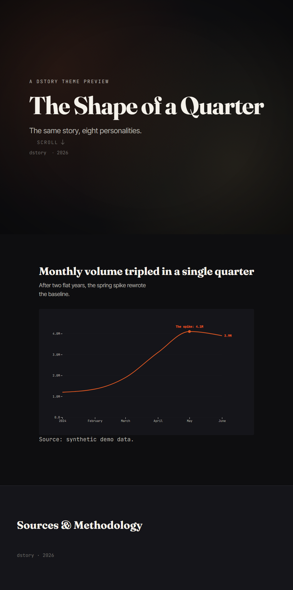
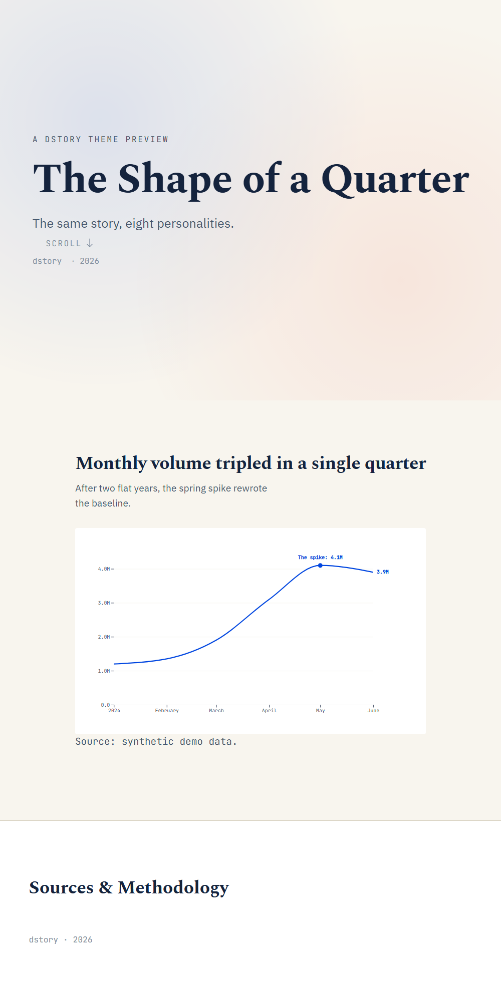
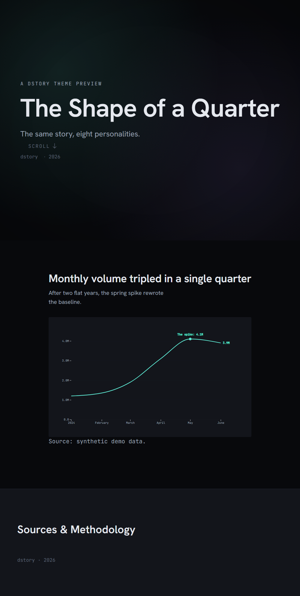
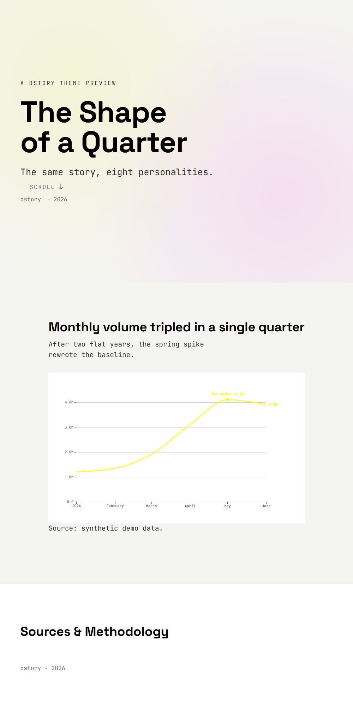

Data stories that ship as a single file.
Turn DataFrames into NYT-style scrollytelling essays and slide decks — scaffolded, branded, vetted, and bundled into one self-contained HTML file you can email, host, or present. Pure Python in. No JavaScript required.
Install
pip install dstory # core: schema + brand + scaffold + bundle
pip install "dstory[vet]" # adds Playwright for browser-driven vetting
pip install "dstory[prep]" # adds pandas for data-prep helpers
pip install "dstory[all]" # everything
# After installing the [vet] extra, install Chromium:
playwright install chromiumQuickstart: notebook, zero JavaScript
One cell, DataFrame to shippable HTML. kind: "vizzu" scenes are fully
declarative — frames animate between any chart configuration, and the space is
much bigger than bar→line: bars curl into pies, scatters pack into treemaps,
lines wrap into radars. Watch the morph
showcase (13 frames, zero JavaScript), then grab configs from the
chart reference.
import pandas as pd
from dstory import build
from dstory.prep import to_long
df = pd.DataFrame({
"month": ["Jan", "Feb", "Mar", "Apr"],
"Signups": [1000, 1500, 2900, 3400],
"Churn": [200, 240, 250, 260],
})
result = build({
"meta": {"title": "Q1 Growth", "theme": "scientific-bright"},
"scenes": [{
"id": "scene-growth", "kind": "vizzu", "dataset": "metrics",
"alt": "Signups more than tripled while churn stayed flat.",
"series": [
{"name": "month", "type": "dimension"},
{"name": "variable", "type": "dimension"},
{"name": "value", "type": "measure"},
],
"frames": [
{"headline": "Signups took off in March",
"config": {"channels": {"x": "month", "y": "value", "color": "variable"},
"geometry": "rectangle"}},
{"headline": "While churn barely moved",
"config": {"channels": {"x": "month", "y": "value", "color": "variable"},
"geometry": "line"}},
],
}],
"datasets": {"metrics": to_long(df, id_vars="month")},
}, "q1-growth", vet=True)
result.html # → q1-growth/dist/story.html — open it, scroll, the chart morphs
result.passed # → True (the 5-dimension vet report)Quickstart: CLI
# 1. Scaffold a project from one of the 8 bundled themes
dstory init my-story --theme editorial-noir --audience general-public
# 2. Add scenes: from the cookbook, a blank stub, or by hand
dstory scene my-story scene-trend --from line-reveal
# 3. Preview while authoring
dstory preview my-story
# 4. Bundle to a single self-contained HTML file (--vendor: works offline)
dstory bundle my-story --vendor
# 5. Vet before delivery
dstory vet my-story/dist/story.html --data my-story/data.jsonThe cookbook
When you want the bespoke-D3 look without writing D3 from scratch: 10
complete, themed, responsive scene renderers. A recipe is source code dropped
into your project — edit it freely, it's yours. Each documents its dataset
columns and scene.config options in the file header. All are theme-token
driven and respect prefers-reduced-motion. There is no BarChart()
API and never will be: recipes are starting points, not abstractions.
dstory recipes # list them
dstory scene my-story scene-growth --from line-reveal # copy one in, wired and readyScene kinds
A story is a sequence of scenes in data.json; each declares its kind:
| Kind | What it is |
|---|---|
simple | Single chart-driven moment — headline, commentary, chart mount, source line. |
scrolly | Sticky chart + stepping text; the chart morphs on each step (your D3 logic via onStep). |
vizzu | Animated data pivots declared as frames[] — no JS needed. 40+ shapes, any-to-any morphs: live showcase · chart reference. |
bleed | Full-viewport cinematic moment. |
pinned | Central object pinned for one scroll-section, transformed by scroll progress (onProgress). |
custom | Chrome-free; the renderer owns the entire <section>. Kinetic typography, embedded interactives, anything. |
Per scene: width (narrow / default / wide / full), chrome: false
to drop the auto-generated headline/commentary elements, and alt for the
chart's screen-reader description.
Brand & themes
A brand is a TOML file defining color tokens, typography, motion personality, atmosphere, and chart palette. The 8 bundled presets are themselves brand TOMLs — extend one without forking anything:
# acme-brand.toml
[brand]
name = "Acme Corp"
extends = "minimal-light"
[colors]
accent = "#FF6B35"
[typography]
display = "'Fraunces', Georgia, serif"
google_fonts = ["Fraunces:opsz,wght@9..144,400;9..144,700"]dstory init acme-story --theme ./acme-brand.toml



→ All 8 presets — same story, eight personalities
Scroll vs. slides
By default the story plays as a scroll-driven essay. Set
meta.mode: "slides" to flip the same scenes into a click/keyboard deck —
arrow keys, position indicator, and #slide-N deep links so you can share
"open at slide 12". Pick scroll for published essays and mobile;
slides for live talks and exec briefings.
Reaching every reader
| Field | Effect |
|---|---|
meta.lang / dir | Sets <html lang dir> — screen-reader voice, hyphenation, RTL layout. |
meta.description | Meta description + Open Graph/Twitter tags, so shared links unfurl properly. |
meta.share_image | og:image / twitter:image for the link card (absolute URL). |
meta.hero_image | Full-bleed hero photo with a theme-aware scrim; local files inlined at bundle time. |
scene.alt | One sentence: what the chart shows and the takeaway → role="img" + aria-label. The vetter flags chart scenes without it. |
The template also ships a skip-to-content link, a reading progress bar,
prefers-reduced-motion support throughout, and a print stylesheet — browser
print yields a clean PDF handout. The vetter is audience-aware too: it scores the
story's prose (Flesch reading ease) against meta.audience and notes when
the writing is harder than that audience should have to work for.
Vetting
dstory vet grades the bundled HTML on five dimensions. A story is
"ready to ship" only when all five pass:
| 1. Renders | Headless browser at 1440/768/480 — no console errors, charts paint, slides navigate. |
| 2. Data fidelity | Every numeric claim cross-checked against the data (catches "tripled" vs value=2.4). |
| 3. Editorial | No slop phrases or placeholders, sources present, headlines are insights, readability vs. audience. |
| 4. Visual | Full-page screenshots saved at all viewports for review. |
| 5. A11y & ethics | Color contrast, alt text, PII leaks, dual-axis warnings. |
Claims & data fidelity
Claims are first-class: each pairs prose with the number it asserts, and the
vetter blocks the build when they drift apart. compute_claim() derives
the phrase from the value using the same vocabulary the vetter checks, so a claim
built this way cannot fail vetting:
from dstory.prep import compute_ratio, compute_claim
ratio = compute_ratio(after=2900, before=1000) # 2.9
claim = compute_claim(
id="c1",
text_template="Signups {phrase} in Q1", # → "Signups tripled in Q1"
value=ratio,
)Offline bundles
dstory bundle --vendor downloads and inlines the CDN runtime libraries
(d3, scrollama, Motion), so the single HTML file works with no network at
all — on a plane, behind a proxy, in ten years. Adds ~300 KB. Vizzu
scenes are the one exception (the library streams WebAssembly at runtime); stories
without them become fully self-contained, and the bundler tells you either way.
CLI reference
dstory init | Scaffold a project — --theme (preset or TOML path), --audience, --mode, --title. |
dstory scene | Add a scene script — --from <recipe> (cookbook) or --kind (blank stub). Wires index.html automatically. |
dstory recipes | List the cookbook recipes. |
dstory preview | Local dev server (unbundled projects fetch data.json, which file:// blocks). |
dstory bundle | Project → dist/story.html — --vendor for offline, --no-validate to skip schema checks. |
dstory vet | 5-dimension report — --no-browser for static checks only. |
dstory themes | List the 8 brand presets. |
Python API
build(story, path, …) | One call: scaffold + data.json + scenes + bundle (+ vet). Returns BuildResult with .html, .passed. |
Story / Scene / Meta / Claim | Pydantic models for data.json — authoring bugs surface at build time. |
Brand | .from_preset(), .from_toml(), .extend(accent="#…"), .css(). |
init / write_scene / wire_scenes | Scaffolding primitives (what build() composes). |
bundle(slug, vendor=…) | Inline CSS/JS/images/data → one file, with self-containment warnings. |
vet(html, data=…) | Typed 5-dimension Report. |
recipe_js / list_recipes / recipe_demo | The cookbook, programmatically. |
dstory.prep | to_records / to_long (DataFrame → datasets), compute_claim, fmt_compact / fmt_pct. |
How is this different from…?
| Streamlit / Dash | No server. The output is one HTML file that works from an email attachment. Narrative-first, not dashboard-first. |
| ipyvizzu-story | dstory's vizzu scenes cover the same ground, then add 5 other scene kinds, a brand system, claim-vs-data vetting, and a11y/editorial gates. |
| Quarto | Quarto renders documents; dstory builds bespoke graphics-led stories with scroll-driven chart morphs, and vets the output in a real browser. |
| Flourish / Datawrapper | Code-first and version-controlled; your data never leaves your machine; no per-seat licensing. |